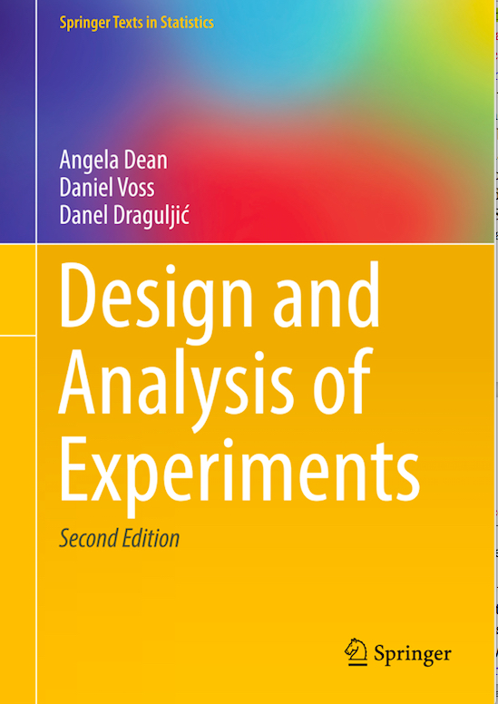

|
 |
|
SAS program files
| Chapter | Experiment | Program | Table | Page | Location |
|---|---|---|---|---|---|
| Chap. 3 | (none) | randomize.sas | (in text) | p53 | Sect. 3.8.1 |
| soap | soap.sas | Table 3.8 | p54 | Sect. 3.8.2 | |
| soap2.sas | Table 3.9 | p57 | Sect. 3.8.3 | ||
| Chap. 4 | battery | battery.sas | Table 4.1 | p94 | Sect. 4.6 |
| Chap. 5 | mung bean | mung.bean.sas | Table 5.8 | p121 | Sect. 5.8.1 |
| mung.bean2.sas | Table 5.9 | p123 | Sect. 5.8.2 | ||
| trout | trout.sas | Table 5.10 | p125 | Sect. 5.8.3 | |
| Chap. 6 | reaction time | reaction.time.sas | Table 6.13 | p178 | Sect. 6.8 |
| reaction.time2.sas | (in text) | pp182-3 | Sect. 6.8.3 | ||
| air velocity | air.velocity.sas | Table 6.14 | p184 | Sect. 6.8.4 | |
| Chap. 7 | drill advance | drill.sas | Table 7.8 | p226 | Sect. 7.6.1 |
| drill2.sas | Table 7.9 | p227 | Sect. 7.6.2 | ||
| rail weld | rail.weld.sas | Table 7.10 | p229 | Sect. 7.6.3 | |
| Chap. 8 | bean soaking | bean.sas | Table 8.9 | p275 | Sect. 8.9 |
| Chap. 9 | balloon | balloon.sas | Table 9.5 | p297 | Sect. 9.6 |
| Chap. 10 | cotton spinning | cotton.spinning.sas | Table 10.13 | p328 | Sect. 10.9 |
| Chap. 11 | (proc optex) | optex.sas | Table 11.17 | p376 | Sect. 11.8.1 |
| detergent | detergent.sas | Table 11.18 | p378 | Sect. 11.8.2 | |
| plasma (day 1) | plasma.day1.sas | Table 11.19 | p382 | Sect. 11.8.3 | |
| Chap. 12 |
exercise bicycle |
exercise.bicycle.sas |
Table 12.10 (in text) |
p417 pp417-9 |
Sect. 12.8 Sect. 12.8.1 |
| exercise.bicycle2.sas | Table 12.11 | p420 | Sect. 12.8.2 | ||
| Chap. 13 | coil | coil.sas | Table 13.20 | p461 | Sect. 13.11 |
| Chap. 14 | dye | dye.sas | Table 14.16 | p487 | Sect. 14.5 |
| Chap. 15 | sludge | sludge.sas | Tbls 15.41-42 | pp539-40 | Sect. 15.9.1 |
| inclinometer | inclinometer.sas | Table 15.43 | p542 | Sect. 15.9.2 | |
| Chap. 16 | acid copper pattern plating | copper.sas | Table 16.15 | p594 | Sect. 16.7.1 |
| PAH recovery | PAH.sas | Table 16.16 | p596 | Sect. 16.7.2 | |
| Chap. 17 | clean wool | clean.wool.sas | Table 17.12 | p653 | Sect. 17.10.1 |
| temperature |
temperature.sas |
Table 17.13 (in text) |
p654 p655 |
Sect. 17.10.2 |
|
| ice cream | ice.cream.sas | (in text) | p656-7 | Sect. 17.10.2 | |
| ice.cream2.sas | Table 17.14 | p658 | Sect. 17.10.3 | ||
| Chap. 18 | voltage | voltage.sas | Table 18.7 | p689 | Sect. 18.5.1 |
| Chap. 19 | oats | oats.sas | Table 19.15 | p728 | Sect. 19.8.1 |
| UAV | UAV.sas | Table 19.16 | p732 | Sect. 19.8.2 | |
| UAV switch | UAV3.sas | Table 19.19 | p736 | Sect. 19.8.3 | |
| oats | oats2.sas | Table 19.20 | p739 | Sect. 19.8.4 | |
| mobile computing field study | MCFS71.sas | Table 19.21 | p743 | Sect. 19.8.5 | |
| Chap. 20 | (generate one LHD) | create.LHD.sas | Tables 20.3-4 | p780-1 | Sect. 20.6.1 |
| (Find approx. maximin LHD) | maximin.LHD.sas | Tables 20.3-5 | p780-2 | ||
| neuron | neuron.sas | Table 20.6 | p783 | Sect. 20.6.2 |
Design and Analysis of Experiments, by Dean, Voss, and Draguljić, Springer-Verlag NY, 2017